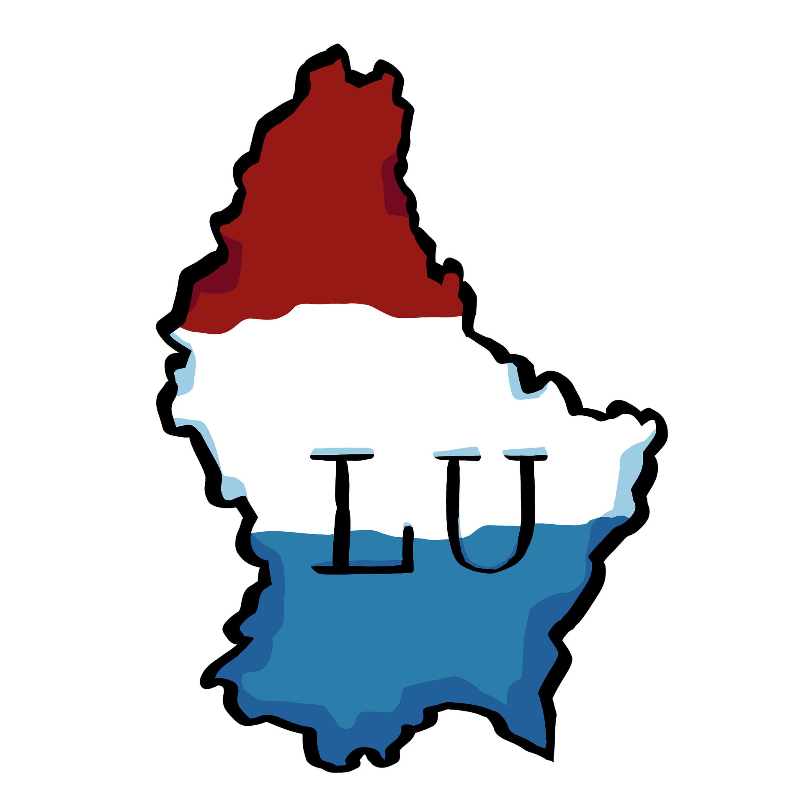
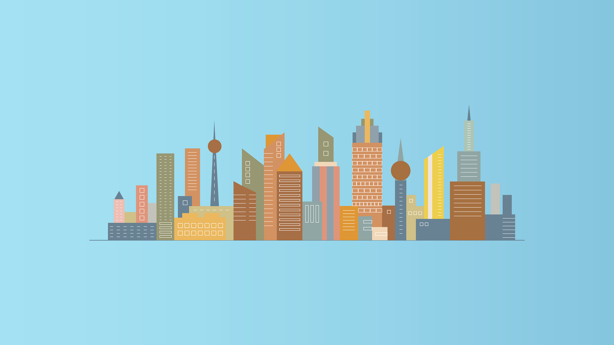

Informações Gerais
Dados demográficos, geográficos, institucionais e curiosidades sobre a cidade.
| Demografia | População | ~36.600 hab. |
|---|---|---|
| Densidade populacional | ~2.500 hab/km² | |
| Geografia | Área | 14,35 km² |
| Canton / Região | Esch-sur-Alzette | |
| País | Luxemburgo | |
| Website | www.esch.lu | |

5 Curiosidades sobre Esch-sur-Alzette
- Capital Europeia da Cultura: A cidade foi nomeada Capital Europeia da Cultura em 2022.
- Transformação Industrial: A zona industrial de Belval foi reconvertida num polo moderno.
- Cidade Universitária: O campus foi construído ao redor dos antigos altos-fornos.
- Diversidade Cultural: Vivem mais de 110 nacionalidades diferentes na cidade.
- A Maior Rua Pedonal: Possui a maior rua de comércio pedonal do Luxemburgo.
